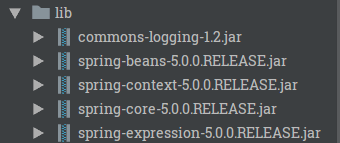
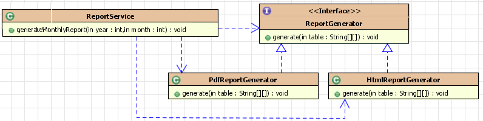
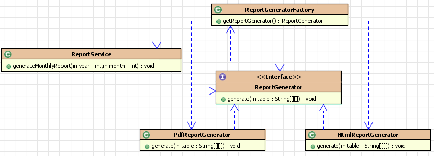
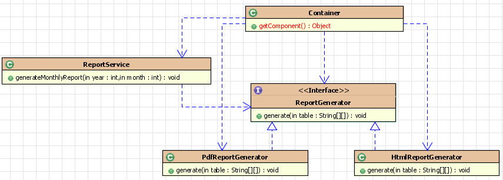

自学Spring第一天，主要目的是使用Spring中的Beans完成依赖注入或者叫做控制反转，之后对所学的内容做一个总结。
安装Spring与HelloWorld
下载
Spring 项目本身托管到Github上，官方首页有通往Github的链接，但是这里提供更为方便的方式去获取Spring相关的jar包https://repo.spring.io/webapp/#/home
将jar包添加到目录

其中commons-logging.jar需要另外下载
HelloWorld
建立一个简单的Bean
1 | public class HelloWorld { |
配置Spring Bean容器配置文件
1 | <?xml version="1.0" encoding="UTF-8"?> |
需要注意的是IDEA添加的方式是src上右键->XMLConfigurationFile->SpringConfig
实现IOC
1 | public class Main { |
对于依赖处理方式的演变
分类接口与实现

这种方式虽用面向对象的处理方式，抽象出接口，并有其不同的实现类，但是导致依赖于其接口的业务类太过复杂,图中Report Service需要与三个组件打交道
工厂模式的引入

引入工厂模式，加入了中间层，由工厂去管理依赖，而Report直接依赖与工厂，这样大大简化了阶段一Report Service的职责，由工厂保证是否是单例等等，依赖变少，组织结构变得更加清晰
IOC方式的引入

由之前需要什么找工厂去“生产”到需要什么让管理器去注入，容器管理对象的完整声明周期。